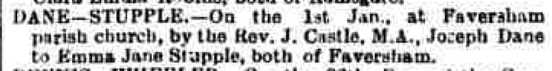

Emma Jane Dane (née Stupple) 1875 - c1963
[ Home ] | [ Calendar ] | [ Surnames Index ] | [ Errors ] | [ Family History ]A domestic general servant and the child of Thomas Stupple (a bricklayer's labourer) and Ann Gammon (a charwoman), Emma Stupple, the first cousin three-times-removed on the mother's side of Nigel Horne, was born in Herne Bay, Kent, England on 29 Aug 18751,2,3, was baptised there at Christ Church on 3 Oct 1875 and married Joseph Dane (a master mariner, licensed victualler with whom she had 8 children: Francis, Louisa Alice Maud, Mayflower, Lily Josephine, Albert, Violet Elizabeth, Rose Victoria and Daisy Lillian) at St Mary Of Charity, Faversham, Kent, England on 1 Jan 18965.
During her life, she was living at Nursery Gardens, Herne, Kent on 3 Apr 18811; at King Street in Herne Bay on 5 Apr 18919; in Canterbury, Kent, England in 18966; at 3 Danes Cottage in Faversham on 31 Mar 19018; on Two Brewers, 1 Quay Lane in Faversham on 2 Apr 19117; and at 24 South Road in Faversham on 29 Sept 19392.
She died c. May 1963 in Sittingbourne, Kent, England4.
Parents
- Thomas was born c. 1831
- Ann Maria was born in 1844
Children
- Francis was born c. Nov 1896
- Louisa Alice Maud was born on 29 Nov 1899
- Mayflower was born on 21 Dec 1903
- Lily Josephine was born c. Feb 1906
- Albert was born c. Feb 1908
- Violet Elizabeth was born c. Nov 1909
- Rose Victoria was born on 8 Jan 1912
- Daisy Lillian was born on 30 Sept 1916
Citations
- 1881 England, Wales & Scotland Census - Findmypast (was age 5 and the daughter of the head of the household)
- 1939 Register - Findmypast (was the wife of the head of the household)
- England & Wales births 1837-2006 - Findmypast
- England & Wales deaths 1837-2007 - Findmypast
- England & Wales Marriages 1837-2005 - Findmypast
- British Newspaper Marriage Notices - Findmypast
- 1911 Census for England & Wales - Findmypast (was age 36 and the wife of the head of the household)
- 1901 England, Wales & Scotland Census - Findmypast (was age 25 and the wife of the head of the household)
- 1891 England, Wales & Scotland Census - Findmypast (was age 16 and a boarder in the household)
Media
Canterbury Journal, Kentish Times and Farmers' Gazette January 11, 1896

Canterbury Journal, Kentish Times and Farmers' Gazette January 11, 1896
England & Wales births 1837-2006 - BMD/B/1875/4/AZ/000517/011
England & Wales marriages 1837-2005 - BMD/M/1896/1/AZ/000238/322
Kent, Canterbury Archdeaconry marriages 1538-1928 - GBPRS/CANT/M/97029599/2
England & Wales deaths 1837-2007 - BMD/D/1963/2/AZ/000186/112
1939 Register - TNA/R39/1715/1715G/015/21
1891 England, Wales & Scotland Census - GBC-1891-0005766812
England Births & Baptisms 1538-1975 - R_884300792
Kent marriages and banns - GBPRS/CANT/M/94026845/2
British Newspaper Marriage Notices - FN-M-6D824028-9527-45E6-9A70-A3618F9F0438
Family Tree

Map
Generated by ged2site. Last updated on Jul 3, 2024
Known Issues
5 Apr 1891: Not living with either parent in childhood when aged 15